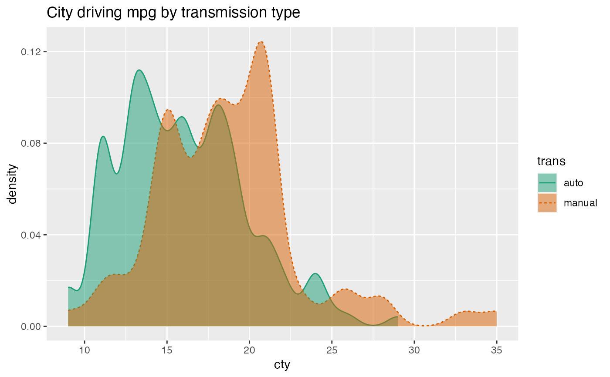
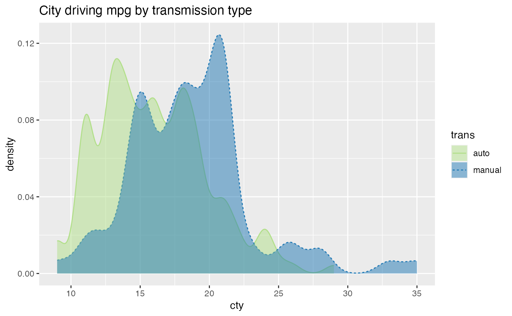
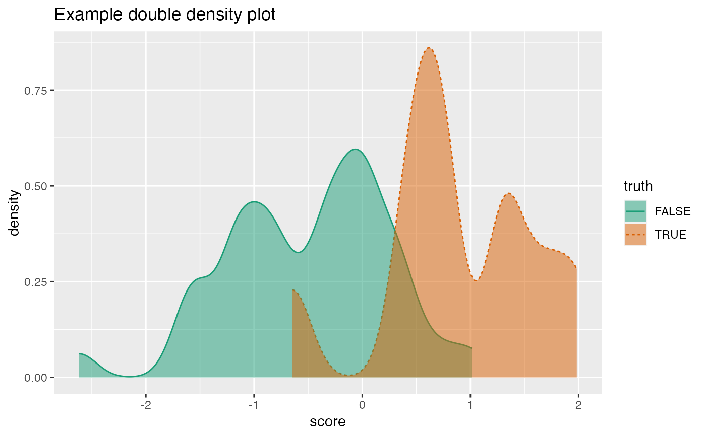

R/DoubleDensity.R
DoubleDensityPlot.RdPlot two density plots conditioned on a binary outcome variable.
DoubleDensityPlot( frame, xvar, truthVar, title, ..., truth_target = NULL, palette = "Dark2" )
| frame | data frame to get values from |
|---|---|
| xvar | name of the independent (input or model) column in frame |
| truthVar | name of the dependent (output or result to be modeled) column in frame |
| title | title to place on plot |
| ... | no unnamed argument, added to force named binding of later arguments. |
| truth_target | if not NULL compare to this scalar value. |
| palette | name of Brewer palette (can be NULL) |
The use case for this visualization is to plot the distribution of a predictive model score (usually the predicted probability of a desired outcome) conditioned on the actual outcome. However, you can use it to compare the distribution of any numerical quantity conditioned on a binary feature. See the examples.
The plot will degrade gracefully in degenerate conditions, for example when only one category is present.
If palette is NULL, plot colors will be chosen from the default ggplot2 palette. Setting palette to NULL
allows the user to choose a non-Brewer palette, for example with scale_fill_manual.
mpg = ggplot2::mpg mpg$trans = gsub("\\(.*$", '', mpg$trans) WVPlots::DoubleDensityPlot(mpg, "cty", "trans", "City driving mpg by transmission type")# redo the last plot with a custom palette cmap = c("auto" = "#b2df8a", "manual" = "#1f78b4") plt = WVPlots::DoubleDensityPlot(mpg, "cty", "trans", palette = NULL, title="City driving mpg by transmission type") plt + ggplot2::scale_color_manual(values=cmap) + ggplot2::scale_fill_manual(values=cmap)set.seed(34903490) x = rnorm(50) y = 0.5*x^2 + 2*x + rnorm(length(x)) frm = data.frame(score=x, truth=(y>=as.numeric(quantile(y,probs=0.8))), stuck=TRUE, rare=FALSE) frm[1,'rare'] = TRUE WVPlots::DoubleDensityPlot(frm, "score", "truth", title="Example double density plot")